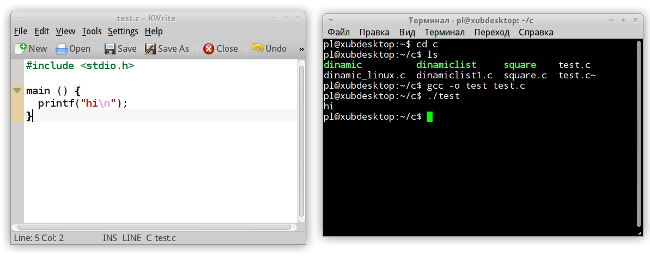

Особенности языка С. Учебное пособие
C — это достаточно "древний" язык программирования, он сформировался в начале 70-х. Не смотря на это обстоятельство, C — живой язык в том смысле, что он активно применяется в настоящее время. Он был придуман, использовался и используется для написания существенных частей программного кода Unix-подобных операционных систем. Также на нем пишут утилиты, компиляторы и реже прикладные программы. Поэтому C называют системным языком программирования.
Его живучесть можно объяснить тем, что принципы работы операционных систем относительно универсальны, они не подвержены тому прогрессу, который можно наблюдать в среде пользовательского ПО и Web-приложений. C не является языком достаточно высокого уровня, он близок к аппаратуре компьютера. В результате программы на C получаются относительно компактными и быстрыми.
C не поддерживает объектно-ориентированного программирования. Поддержка ООП реализована в C++. Хотя последний возник на основе языка C, он не является его "продолжением", а представляет собой отдельный язык, который можно изучать, не зная C. Однако, на мой взгляд, изучение C будет полезно перед знакомством с его "продвинутым младшим братом", т.к. синтаксис языков похож, C не перегружает мозг начинающего программиста сверхвозможностями и приучает к пониманию сути происходящего.
Подходит ли C для первого знакомства с программированием? По моему скромному мнению, нет. Особенно, если первое знакомство происходит в школьном возрасте. Нельзя сказать, что синтаксис C сложнее, чем у Pascal. Но в языке C многое делается с помощью указателей, они играют здесь ключевую роль; а эта тема достаточно сложная для понимания и почти не изучается в школе. C предполагает более глубокое знание основ работы компьютера. Конечно, можно изучать программирование с использованием C и не изучать при этом указатели. Однако получится какое-то урезанное изучение. Получится, что человек будет думать, что знает C, почти ничего о нем не зная. C был придуман серьезными бородатыми людьми для написания серьезной программы — операционной системы UNIX. Он не был придуман для обучения начинающих, которые не всегда могут отличить ветвление от цикла.
Поэтому это пособие посвящается тем, для кого C как минимум второй изучаемый язык программирования, и они как минимум представляют себе, что такое переменная, ветвление, цикл, функция, тип данных, массив. Если вы знакомы только с языком Python, в котором нет массивов, это не страшно. Массивы очень похожи на списки, за одним существенным исключением. В одном python-списке элементы могут быть как одного так и различного типа, а массив всегда содержит элементы одного и того же типа.
С другой стороны курс "читается" для школьников, возможно с ним познакомятся и их учителя, поэтому стиль изложения адаптирован для соответствующей аудитории.
В результате изучения данного курса вы не познакомитесь с реальными примерами практического использования языка C, не научитесь решать сложные логические задачи типа олимпиадных. Вы просто будете знать особенности C. Это не так уж мало. На момент написания этого урока предполагается, что курс будет включать примерно 25 уроков.
Перед тем как приступить к созданию этого курса мной были прочитаны, пролистаны и просмотрены следующие источники:
Несколько слов по поводу указанных источников. Более тщательно был изучен первый, остальные достаточно поверхностно. В книге K&R встречается использование конструкций и понятий языка до того, как они будут объяснены. Начиная где-то с главы 3, примеры достаточно сложные и объёмные. Сами авторы в начале издания говорят о том, что они пытаются показать реальные примеры и стиль программирования на C. В данном пособии примеры будут простыми, целью их будет демонстрация понятий компьютерной науки, программирования, языка C, а не реализация логики решения задач, имеющих практическое значение.
Книга Дейтелов включает описание не только языка C, но и C++ (начиная примерно с 15 главы). Данное пособие, на мой взгляд, лучше других подходит для самообразования. Содержит целостные примеры, много заданий, предупреждения о возможных ошибках и советы. Материал расчитан на людей, которые только начинают изучать программирование.
Курс Калининой-Костюковой содержит некоторые "архаизмы" (то, как там объявляются переменные в функциях), когда доходит до сложного, то краткие ясные и подробно разобранные примеры отсутствуют, в одном примере используется оператор new языка C++ и тут же функция malloc() языка C, что странно, учитывая, что new до этого не упоминается. В остальном в курсе достаточно подробно разобраны основы языка С. В следствие чего, читается он легче K&R.
Курс господина Полякова, на наш взгляд, является прежде всего курсом по алгоритмике и решению задач, в нем достаточно подробно разобраны массивы и сортировки. При работе с динамическими структурами используется язык C++. Курс понравился своей ясностью, четкостью и наглядностью. В свете "лицензионного соглашения", приведенного на странице курса Полякова, обещаю проследить, чтобы примеры, а также имена переменных из моего пособия не совпадали с теми, которые используются в его. Однако оттуда была сперта идея использовать в Windows среду программирования Dev-C++, которая является СПО и скачать ее можно с сайта разработчика: bloodshed.net.
Самоучитель Н. Иванова помог понять, как собираются многофайловые программы и используются библиотеки. Википедии использовалась для поиска дополнительной информации.
Я предпочитаю GNU/Linux, Vim и GCC. Однако, если вас пугает Vim, то можете использовать любой текстовый редактор с подсветкой синтаксиса (например, KWrite). В таком случае в GNU/Linux у вас должны быть постоянно открытыми два окна: редактор и Консоль (оно же Терминал). В одном вы редактируете исходный код программы, в другом — даете команды. (Это наиболее удобный вариант, особенно при обучении в группе или классе.)

У вас может быть открыто всего одно окно, если вы будете использовать Vim, т.к. он позволяет отдавать команды оболочке Bash из самого редактора. Не рекомендую пользоваться какими либо средами разработки, которые при сохранении файла создают "левые" дополнительные файлы. При обучении все должно быть ясно и просто.
Если вы не знакомы с Vim, но решили его попробовать, то после установки этого редактора, выполните в Bash команду vimtutor. Запустится самоучитель по Vim, у меня в Ubuntu он на русском языке. Данный учебник "проходится" как интересная игра. Конечно не за обещанные 25-30 минут, но за пару часов вы освоитесь в Vim, так что сможете в нем писать программы. В принципе для более-менее комфортной работы вам будет достаточно запомнить следующие команды Vim:
dd – удалить строку и поместить ее в буфер;
yy – скопировать строку в буфер, 2yy – скопировать две строки (число может быть любым);
p — вставить объект из буфера.
C – компилируемый язык программирования. В GNU/Linux для получения исполняемых файлов используется GCC. Об этом инструменте можете прочитать в Википедии или других источниках. Сейчас вам надо запомнить следующее. Чтобы из исходного файла (будем приписывать к названиям таких файлов расширение *.с) получить исполняемый файл, надо выполнить в оболочке Bash команду примерно следующего вида:
gcc -o hello hello.c
, где gcc — команда, запускающая программу, выполняющую компиляцию и иные действия; -o – ключ, сообщающий, что мы вручную указываем имя исполняемого файла; hello – имя исполняемого файла; hello.c – имя файла с исходным кодом.
Вот как примерно работаю в GNU/Linux я при написании маленьких программ на C:
1. Открываю Терминал.
2. С помощью команды cd перехожу в каталог, где собираюсь сохранять файлы.
3. Запускаю Vim, передав в качестве параметра имя файла:
vim hello.c
4. Редактирую файл (i), сохраняю его (Esc->:w).
5. Не выходя из Vim, в командной строке редактора даю команду на компиляцию (обратите внимание на восклицательный знак, он означает, что команда не для Vim, а для Bash):
:!gcc -o hello hello.c
6. Запускаю исполняемый файл (комбинация символов ./ обозначает текущий каталог):
:!./hello
7. Следует заметить, что после проставления двоеточия в командной строке Vim работает прокрутка истории команд, что удобно, если файл часто редактируется и снова компилируется.
Если вы будете работать в обычном текстовом редакторе, то в Терминале не забудьте перейти в каталог, где сохранен файл с исходным кодом.
В Windows можете использовать среду Dev-C++. При сохранении выбирайте тип файла "C source files (*.c)". Компиляция и запуск программы выполняется при нажатии клавиши F9. После исполнения программа сразу закрывается и результат невозможно увидеть. Чтобы этого не происходило прописывают лишние две строки (#include <conio.h>, getch()).
| "Hello World" в GNU/Linux | "Hello World" в Windows |
|---|---|
#include <stdio.h> main () { printf ("Hello World\n"); } |
#include <stdio.h> #include <conio.h> main () { printf ("Hello World\n"); getch(); } |
Сразу отметим некоторые особенности языка программирования C.
Можно было бы сказать, что в языке C роль основной ветки программы берет на себя функция main(). Эта функция всегда должна присутствовать в законченной программе на языке C, и исполнение программы начинается именно с нее. Однако объявленные внутри нее переменные не являются глобальными, а их область видимости простирается только на main(). Тем не менее в языке программирования C почти весь программный код заключается в функции, и функция main() является главной и обязательной.
Функция printf() предназначена для вывода данных. Ее назначение аналогично процедуре write() языка Pascal и функции print() в Python. Функция printf() не создает новую строку после своего исполнения. Поэтому для перехода на новую строку используется специальный символ, который обозначается комбинацией \n. Законченные выражения на языке C разделяются точкой с запятой.
В C функции ввода-вывода не являются частью языка. Например, в Python нам ничего не надо дополнительно присоединять к файлу, чтобы пользоваться функциями print() и input(). В C же мы не можем просто вызвать функцию printf(), т.к. в самом C ее просто нет. Эту функцию, а также ряд других, можно подключить с помощью заголовочного файла stdio.h. Именно для этого в начале программы прописана строка #include <stdio.h>. Include с английского переводится как "включить", а stdio есть сокращение от "стандартный ввод-вывод (input-output)".
В заголовочных файлах (они оканчиваются на *.h) обычно содержаться объявления тех или иных функций. Объявление — это просто описание функции: какие параметры она принимает и что возвращает. Сам код функции (определение) находится не в заголовочном файле, а в библиотеках (других файлах), которые могут быть уже скомпилированы и расположены в системных каталогах. Перед компиляцией программы запускается препроцессор языка C. Помимо прочего он включает в начало файла программы содержимое указанных в ней заголовочных файлов.
Удалите (или закомментируйте1) первую строчку кода, после этого попробуйте скомпилировать программу. Какие сообщения вы получили?
1 // - однострочный комментарий на языке C; /* … */ - "универсальный" комментарий на языке C.